Exam 3 revision - all possible questions
Section A
True/False
Mark each statement True or False. If you believe that a statement is false, briefly explain why you think it is false.
11. All other things the same, a 90% confidence interval is shorter than a 95% confidence interval.
12. Ninety-five percent z-intervals have the form of a statistic plus or minus 3 standard errors of the statistic.
13. By increasing the sample size from n = 100 to n = 400, we can reduce-the margin of error by 50%.
14. If we double the sample size from n = 50 to n = 100, the length of the confidence interval is reduced by half.
15. If the 95% confidence interval for the average purchase of customers at a department store is $50 to $110, then $100 is a plausible value for the population mean at this level of confidence.
16. If the 95% confidence interval for the number of moviegoers who purchase from the concession stand is 30% to 45%, then fewer than half of all moviegoers do not purchase from the concession stand.
17. If zero lies inside the 95% confidence interval for \(\mu\), then zero is also inside the 99% confidence interval for \(\mu\).
18. There is a 95% chance that the mean y of a second sample from the same population is in the range \(\bar{x} \pm 1.96\sigma/\sqrt{n}.\)
19. To guarantee a margin of error of 0.05 for the population proportion \(p\), a survey needs to have at least 500 respondents.
20. The 95% t-interval for \(\mu\) works best if the sample data are normally distributed.
Think About It
21. Convert these confidence intervals.
(a) [11 pounds to 45 pounds] to kilograms (1 pound = 0.453 kilogram)
(b) [$2,300 to $4,400] to yen (Use the exchange rate of $1 = \(\yen\) 116.3.)
(c) [$79.50 to $101.44] minus a fixed cost of $25
(d) [$465,000 to $729,000] for total revenue of 25 retail stores to a per-store revenue
22. Convert these confidence intervals.
(a) [14.3 liters to 19.4 liters ] to gallons (1 gallon = 3.785 liters )
(b) [€234 to €520] to dollars ( Use the exchange rate 1 dollar = 0.821 euro. )
(c) 5% of [ $23,564 to $45,637]
(d) 250 items at a profit of [$23.4 to $32.8 ] each (Give the interval for the total.)
23. What are the chances that \(\bar{X} > \mu\)
24. What is the coverage of the confidence interval [\(\hat{p}\) to 1]?
25. Which is shorter, a 95% z-interval for \(\mu\) or a 95% t-interval for \(\mu\)? Is one of these always shorter, or does the outcome depend on the sample?
26. Which is more likely to contain \(\mu\), the z-interval \(\bar{X} \pm 1.96\sigma-\sqrt{n}\) or the t-interval \(\bar{X} \pm t_{o.o25,n-1}S/\sqrt{n}\)?
27. The clothing buyer for a department store wants to order the right mix of sizes. As part of a survey, she measured the height (in inches) of men who bought suits at this store. Her software reported the following confidence interval:
With 95.00% confidence, 70.8876 < \(\mu\) < 74.4970
(a) Explain carefully what the software output means.
(b) What’s the margin of error for this interval?
(c) How should the buyer round the endpoints of the interval to summarize the result in a report for store managers?
(d) If the researcher had calculated a 99% confidence interval, would the output have shown a longer or shorter interval?
28. Data collected at a company produced this confidence interval for the average age of MBAs hired during the past recruiting season.
With 95.00% confidence, 26.202 < \(\mu\) < 28.844
(a) Explain carefully what the software output means.
(b) What is the margin of error for this interval?
(c) Round the endpoints of the interval for a scale appropriate for a summary report to management.
(d) If the researcher had calculated a 90% confidence interval, would the interval be longer or shorter?
29. A summary of sales of a department store says that the average retail purchase was $125 with a margin of error equal to $15. What does the margin of error mean in this context?
30. A news report summarizes a poll of voters and then adds that the margin of error is plus or minus 4%. Explain what that means.
31. To prepare a report on the economy, analysts need to estimate the percentage of businesses that plan to hire additional employees in the next 60 days.
(a) How many randomly selected employers must you contact in order to guarantee a margin of error of no more than 4%?
(b) If analysts believe that at most 20% of firms are likely to be hiring, how many must they survey to obtain a margin of error 0.04?
32. A political candidate is anxious about the outcome of the election.
(a) To have his next survey result produce a 95% confidence interval with margin of error of no more than 0.025, how many eligible voters are needed in the sample?
(b) If the candidate fears that he’s way behind and needs to save money, how many voters are needed if he expects that his percentage among voters p is near 0.25?
33. The Basel II standards for banking specify procedures for estimating the exposure to risk. In particular, Basel II specifies how much cash banks must keep on hand to cover bad loans. One element of these standards is the following formula, which expresses the expected amount lost when a borrower defaults on a loan:
Expected Loss = PD X EAD X LGD
where PD is the probability of default on the loan, EAD is the exposure at default (the face value of the loan), and LGD is the loss given default (expressed as a percentage of the loan).
For a certain class of mortgages, 6% of the borrowers are expected to default. The face value of these mortgages averages $250,000. On average, the bank recovers 80% of the mortgaged amount if the borrower defaults by selling the property.
(a) What is the expected loss on a mortgage?
(b) Each stated characteristic is a sample estimate. The 95% confidence intervals are [0.05 to 0.07 for PD, [$220,000 to $290,000] for EAD, and [0.18 to 0.23] for LGD. What effect does this uncertainty have on the expected loss?
(c) What can be said about the coverage of the range implied by combining these intervals?
34. Catalog sales companies such as L.L. Bean mail seasonal catalogs to prior customers. The expected profit from each mailed catalog can be expressed as the product
Expected Profit = p x D x S
where p is the probability that the customer places an order, D is the dollar amount of the order, and S is the percentage profit earned on the total value of an order. Typically, 10% of customers who receive a catalog place orders that average $125, and 20% of that amount is profit.
(a) What is the expected profit under these conditions?
(b) The response rates and amounts are sample estimates. If it costs the company $2.00 to mail each catalog, how accurate does the estimate of p need to be in order to convince you that the expected profit from the next mailing is positive?
You Do It
35. Find the appropriate percentile from a t-distribution for constructing the following confidence intervals:
(a) 90% t-interval with n = 12
(b) 95% t-interval with n = 6
(c) 99% t-interval with n = 15
36. Find the appropriate percentile for the following:
(a) 90% t-interval with n = 5
(b) 95% t-interval with n = 20
(c) 99% t-interval with n = 2
37. Consider each situation described below. Identify the population and the sample, explain what the parameter p or \(\mu\) represents, and tell whether the methods of this chapter can be used to create a confidence interval. If so, find the interval.
(a) The service department at a new car dealer checks for small dents in cars brought in for scheduled maintenance. It finds that 22 of 87 cars have a dent that can be removed easily. The service department wants to estimate the percentage of all cars with these easily repaired dents.
(b) A survey of customers at a supermarket asks whether they found shopping at this market more pleasing than at a nearby store. Of the 2,500 forms distributed to customers, 325 were filled in and 250 of these said that the experience was more pleasing.
(c) A poll asks visitors to a Web site for the number of hours spent Web surfing daily. The poll gets 223 responses one day. The average response is three hours per day with s = 1.5.
(d) A sample of 1,000 customers given loans during the past two years contains 2 who have defaulted.
38. Consider each situation. Identify the population and the sample, explain what p or p, represents, and tell whether the methods of this chapter can be used to create a confidence interval. If so, indicate what the interval would say about the parameter.
(a) A consumer group surveys 195 people who recently bought new kitchen appliances. Fifteen percent of them expressed dissatisfaction with the salesperson.
(b) A catalog mail order firm finds that the number of days between orders for a sample of 250 customers averages 105 days with s = 55.
(c) A questionnaire given to customers at a warehouse store finds that only 2 of the 50 who return the questionnaire live more than 25 miles away
(d) A factory is considering requiring employees to wear uniforms. In a survey of all 1,245 employees, 380 forms are returned, with 228 employees in favor of the change.
39. Hoping to lure more shoppers downtown, a city builds a new public parking garage in the central business district. The city plans to pay for the structure through parking fees. During a two-month period (44 weekdays), daily fees collected averaged $1,264 with a standard deviation of $150.
(a) What assumptions must you make in order to use these statistics for inference?
(b) Write a 90% confidence interval for the mean daily income this parking garage will generate, rounded appropriately.
(c) The consultant who advised the city on this project predicted that parking revenues would average $1,300 per day. On the basis of your confidence interval, do you think the consultant was correct? Why or why not?
(d) Give a 90% confidence interval for the total revenue earned during five weekdays.
40. Suppose that for planning purposes the city in Exercise 39 needs a better estimate of the mean daily income from parking fees.
(a) Someone suggests that the city use its data to create a 95% confidence interval instead of the 90% interval first created. Would this interval be better for the city planners? (You need not actually create the new interval.)
(b) How would the 95% interval be worse for the city planners?
(c) How could city planners achieve an interval estimate that would better serve their planning needs?
(d) How many days’ worth of data must planners collect to have 95% confidence of estimating the true mean to within $10? Does this seem like a reasonable objective? (Use a z-interval to simplify the calculations.)
41. A sample of 150 calls to a customer help line during one week found that callers were kept waiting on average for 16 minutes with s = 8.
(a) Find the margin of error for this result if we use a 95% confidence interval for the length of time all customers during this period are kept waiting.
(b) Interpret for management the margin of error.
(c) If we only need to be 90% confident, does the confidence interval become longer or shorter?
(d) Find the 90% confidence interval.
42. A sample of 300 orders for take-out food at a local pizzeria found that the average cost of an order was $23 with s =$15.
(a) Find the margin of error for the average cost of an order.
(b) Interpret for management the margin of error.
(c) If we need to be 99% confident, does the confidence interval become longer or shorter?
(d) Find the 99% confidence interval for the average cost of an order.
43. A book publisher monitors the size of shipments of its textbooks to university bookstores. For a sample of texts used at various schools, the 95% confidence interval for the size of the shipment was 250 ± 45 books. Which, if any, of the following interpretations of this interval is/are correct?
(a) All shipments are between 205 and 295 books.
(b) 95% of shipments are between 160 and 340 books.
(c) The procedure that produced this interval generates ranges that hold the population mean for 95% of samples.
(d) If we get another sample, then we can be 95% sure that the mean of this second sample is between 160 and 340.
(e) We can be 95% confident that the range 160 to 340 holds the population mean.
44. An online retailer promises to deliver orders placed on its Web site within three days. Follow-up calls to randomly selected customers show that a 95% confidence interval for the proportion of all orders that arrive on time is 88% ± 6%. What does this mean? Are the following conclusions correct? Explain.
(a) Between 82% and 94% of all orders arrive on time.
(b) 95% of all random samples of customers will show that 88% of orders arrived on time.
(c) 95% of all random samples of customers will show that 82% to 94% of orders arrived on time.
(d) We are 95% sure that between 82% and 94% of the orders placed by the customers in this sample arrived on time.
On a randomly chosen day, we can be 95% confident that between 82% and 94% of the large volume of orders will arrive on time.
45. Find the 95% z-interval or t-interval for the indicated parameter.
(a) \(\mu\) \(\bar{x} = 152, *s* = 35, *n* = 60\)
(b) \(\mu\) \(\bar{x} = 8, *s* = 75, *n* = 25\)
(c) \(\mu\) \(\hat{p} = 0.5, n = 75\)
(d) \(\mu\) \(\hat{p} = 0.3, n = 23\)
46. Show the 95% z-interval or t-interval for the indicated parameter.
(a) \(\mu\) \(\bar{x} = -45,s = 80, n = 33\)
(b) \(\mu\) \(\bar{x}=255,s= 16, n = 21\)
(c) \(p\) \(\hat{p} = 0.25, n = 48\)
(d) \(p\) \(\hat{p} = 0.9, n = 52\)
47. Direct mail advertisers send solicitations (junk mail) to thousands of potential customers hoping that some will buy the product. The response rate is usually quite low. Suppose a company wants to test the response to a new flyer and sends it to 1,000 randomly selected people. The company gets orders from 123 of the recipients and decides to do a mass mailing to everyone on its mailing list of 200,000. Create a 95% confidence interval for the percentage of those people who will order something.
48. Not all junk mail comes from businesses. Internet lore is full of familiar scams, such as the desperate foreigner who needs your help to transfer a large amount of money. The scammer sends out 100,000 messages and gets 15 replies. Can the scam artist make a 95% confidence interval for the proportion of victims out there, or is there a problem with the methods of this chapter?
49. A package of light bulbs promises an average life of more than 750 hours per bulb. A consumer group did not believe the claim and tested a sample of 40 bulbs. The average lifetime of these 40 bulbs was 740 hours with s = 30 hours. The manufacturer responded that its claim was based on testing hundreds of bulbs.
(a) If the consumer group and manufacturer both make 95% confidence intervals for the population’s average lifetime, whose will probably be shorter? Can you tell for certain?
(b) Given the usual sampling assumptions, is there a 95% probability that 740 lies in the 95% confidence interval of the manufacturer?
(c) Is the manufacturer’s confidence interval more likely to contain the population mean because it is based on a larger sample?
50. In Fall 2011, the Wall Street Journal reported that 44% of smartphone purchases made by people with incomes between $35,000 to $50,000 were Android phones.16
16 “Targets Shift in Phone Wars”, Wall Street Journal, October 10, 2011.
(a) If the story is based on a sample of 200 purchases, then should we conclude that Android phones were getting less than half of the market at that time?
(b) How large a sample is needed for the 95% confidence interval for the population proportion to exclude 50%?
51. In a survey of employees, Watson-Wyatt reported that 51% had confidence in the actions of senior management.17 To be 95% confident that at least half of all employees have confidence in senior management, how many would have to be in the survey sample?
17 The sample size is 12,703.
52. Fireman’s Fund commissioned an online survey of 1,154 wealthy homeowners to find out what they knew about their insurance coverage.
(a) When asked whether they knew the replacement value of their home, 63% replied yes. In this case, should Fireman’s Fund conclude that more than half of wealthy homeowners know the value of their homes?
(b) Round the interval into a form suitable for presentation.
(c) The results of the survey were accompanied by the statement, “In theory, with probability samples of this size, one could say with 95 percent certainty that the results have a statistical precision of plus or minus 3 percentage points. This online sample was not a probability sample.” What is the point of this comment?
53. Click fraud has become a major concern as more
and more companies advertise on the Internet. When Google places an ad for a company with its search results, the company pays a fee to Google each time someone clicks on the link. That’s fine when it’s a person who’s interested in buying a product or service, but not so good when it’s a computer program pretending to be a customer. An analysis of 1,200 clicks coming into a company’s site during a week identified 175 of these clicks as fraudulent. (18)
18 “Google Faces the slickest Click Fraud Yet,” Forbes.com, January 12, 2010.
(a) Under what conditions does it make sense to treat these 1,200 clicks as a sample? What would be the population?
(b) Show the 95% confidence interval for the population proportion of fraudulent clicks in a form suitable for sharing with a nontechnical audience.
(c) If a company pays Google $4.50 for each click, give a confidence interval (again, to presentation precision) for the mean cost due to fraud per click.
54. Philanthropic organizations, such as the Gates Foundation, care about the return on their investment. For example, if a foundation spends $7,000 for preschool education of children who are at risk, does society get a reasonable return on this investment? A key component of the social benefit is the reduction in spending for crimes later in life. In the High/Scope Perry Preschool Project, 128 children were randomly assigned to a year of regular education or to an intensive preschool program that cost an additional $10,600 per pupil in 2005. By age 27, those in the preschool program averaged 2.3 fewer crimes (with standard error 0.85) than those.who were not in the preschool program.19
19 “Going Beyond Head Start,” Business Week, October 23, 2006. Additional data were derived from The Economics of Investing in Universal Preschool Education in California, L. A. Karoly and I. H. Bigelow (2005), Rand.
(a) Explain why it is important that the children in this study were randomly assigned to the preschool program.
(b) Does the 95% confidence interval for the reduction in crime in the preschool group include zero? Is this important?
(c) If the total cost per crime averages $25,000 (in costs for police, courts, and prisons), give a confidence interval for the savings produced by this preschool program using your interval in (b).
Section B
Mix and Match
Match the description of each concept with the correct symbol or term.
| Concept | Term/Symbol |
|---|---|
|
t-statistic |
|
μ0 |
|
p-value |
|
p-value < α |
|
Type I error |
|
z-statistic |
|
Type II error |
|
α-level |
|
H0: μ ≥ 0 |
|
Ha,H1 |
True or False
Mark each statement True or False. If you believe that a statement is false, briefly explain why you think it is false.
Exercises 11-18. A retailer maintains a Web site that it uses to attract shoppers. The average purchase amount is $80. The retailer is evaluating a new Web site intended to encourage shoppers to spend more. Let μ represent the average amount spent per customer at its redesigned Web site.
- The appropriate null hypothesis for testing the profitability of the new design sets μ0 = $80.
- The appropriate null hypothesis for testing the profitability of the new design is H0: μ ≤ μ0.
- If the α-level of the test is α = 0.05, then there is at most a 5% chance of incorrectly rejecting H0.
- If the p-value of the test of H0 is less than α, then the test has produced a Type II error.
- If the test used by the retailer rejects H0 with the α-level set to α = 0.05, then it would also reject H0 with α = 0.01.
- The larger the sample size used to evaluate the new design, the larger the chance for a Type II error.
- If the standard deviation is estimated from the data, then a z-statistic determines the p-value.
- If the t-statistic rejects H0, then we would also reject H0 had we obtained the p-value using a normal distribution rather than a t-distribution.
Exercises 19-26. An accounting firm is considering offering investment advice in addition to its current focus on tax planning. Its analysis of the costs and benefits of adding this service indicates that it will be profitable if 40% or more of its current customer base use it. The firm pans to survey its customer who will use the service if offered, and let p̂ denote the proportion who say in a survey that they will use this service. The firm does not want to invest in the expansion unless data show that it will be profitable.
- If H0 holds, then p̂ in the sample will be less than 0.4.
- By setting a small α-level, the accounting firm reduces the chance of a test indicating that it should add this new service even though it is not profitable.
- If p̂ is larger than 0.4, a test will reject the appropriate null hypothesis for this context.
- The larger the absolute value of the z-statistic that compares p̂ to p, the smaller the p-value.
- The mean of the sampling distribution of p̂ that is used to determine whether a statistically significant result has been obtained in this example is 0.4.
- The standard error of the sampling distribution of p̂ depends on an estimate determined from the survey results.
- The p-value of the test of the null hypothesis in this example is the probability that the firm should add the investment service.
- Larger samples are more likely than smaller samples to produce a test that incorrectly rejects a true null hypothesis.
Think About It
A pharmaceutical company is testing a newly developed therapy. If the therapy lower the blood pressure of a patient by more than 10mm, it is deemed effective.16 What are the natural hypotheses to test in a clinical study of this new therapy?
A chemical firm has been accused of polluting the local river system. State laws require the accuser to prove the polluting by a statistical analysis of water samples. Is the chemical firm worried about a Type I or a Type II error?
The research labs of a corporation occasionally produce breakthroughs that can lead to multibillion-dollar blockbuster products. Should the managers of the labs be more worried about Type I or Type II errors?
Modern combinatorial chemistry allows drug researchers to explore millions of products when searching for the net big pharmaceutical drug. An analysis can investigate hundreds of thousands of compounds. Suppose that none of 100,000 compounds in reality produces beneficial results. How many would a compounds-by-compound testing procedure with α = 0.05 nonetheless indicate were effective? Would this cause any problems?
Consider the following test of whether a coin is fair. Toss the coin three times. If the coin lands either all heads or all tails, reject H0 : p = 1/2. (The p denotes the chance for the coin to land on heads.)
(a) What is the probability of a Type I error for this procedure?
(b) If p = 3/4, what is the probability of a Type II error for this procedure? (The null hypothesis remains the same.)
A consumer interest group buys a brand-name kitchen appliance. During its first moth of use, the appliance breaks down. The manufacturer claims that 99% of its appliances work for a year without a problem.
(a) State the appropriate null hypothesis that will facilitate a hypothesis test of this claim.
(b) Do the data supply enough information to reject the null hypothesis? If so, at what α-level?
A jury of 12 beings with the premise that the accused is innocent. Assume that there 12 jurors were chosen from a large population, such as voters. Unless the jury votes unanimously for conviction, the accused is set free.
(a) Evidence in the trial of an innocent suspect is enough to convince half of all jurors in the population that the suspect is guilty. What is the probability that a jury convicts an innocent suspect?
(b) What type of error (Type I or Type II) is committed by the jury in part (a)?
(c) Evidence in the trial of guilty suspect is enough to convince 95% of all jurors in the population that the suspect is guilty. What is the probability that a jury fails to convict the guilty suspect?
(d) What type of error is committed by the jury in part (c)?
To demonstrate that a planned commercial will be cost effective, at least 60% of those watching the programming need to see the commercial (rather than switching stations or using a digital recorder to skip the commercial). Typically, half of viewers watch the commercials. It is possible to measure the behavior of viewers in 1,000,000 households, but is such a large sample needed?
The biostatistician who designed a study for investigating the efficacy of a new medication was fired after the study. The tested null hypothesis states that the drug is no better than a placebo. The t-statistic that was obtained in the study of 400 subjects was t = 20, rejecting the null hypothesis and showing that the drug has a beneficial effect. Why was management upset?
Suppose that 2% of the modifications proposed to improve browsing on a Web site actually do improve customers’ experience. The other 98% have no effect. Now imagine testing 100 newly proposed modifications. It is quick and easy to measure the shopping behavior of hundreds of customers on a busy Web site, so each test will use a large sample that allows the test to detect real improvements. The tests use independent samples, and the level of significance is α = 0.05.
(a) Of the 100 tests, how many would you expect to reject the null hypothesis that claims the modifications provides no improvement?
(b) If the tests that find significant improvement are carefully replicated, how many would you expect to again demonstrate a significant improvement?
(c) Do these results suggest an explanation for why scientific discoveries often cannot be replicated?
The Human Resources (HR) group gives job applicants at a firm a personality test to assess how well they will fit into the firm and get along with colleagues. Historically, test scores have been normally distribution with mean μ and standard deviation σ = 25. The HR group wants to hire applicants whose true personality rating μ is greater than 200 points. (Test scores are an imperfect measure of true personality.)
(a) Before seeing test result, should the HR group assert as the null hypothesis that μ for an applicants is greater than 200 or less than 200?
(b) If the HR group chooses H0: μ ≤ 200, then for what test scores (approximately) will the HR group reject H0 if α = 2.5%?
(c) What is the chance of a Type II error using the procedure in part (b) if the true score of an applicant is 225?
A test of filtering software examined a sample of n = 100 messages. If the filtering software reduces the level of spam to 15%, this test only has a 33% chance of correctly rejecting H0: p ≥ 0.20. Suppose instead of using 100 messages, the test were to use n = 400.
(a) In order to obtain a p-value of 0.05, what must be the percentage of spam that gets through the filtering software? (Hint: The z-statistic must be -1.645.)
(b) With the larger sample size, does p̂ need to be as far below p0 = 0.20 as when n = 100? Explain what threshold moves closer to p0.
(c) If in fact p = 0.15, what is the probability that the test with n = 400 correctly rejects H0?
16 Historically, blood pressure was measured using a device that monitored the height of a column of mercury in a tube. That’s not used anymore, but the scale remains.
You Do It
An appliance manufacturer stockpiles washers and dryers in a large warehouse for shipment to retail stores. Some appliances get damaged in handling. The long-term goal has been to keep the level of damaged machines below 2%. In a recent test, an inspector randomly checked 60 washers and discovered that 5 of them had scratches or dents. Test the null hypothesis H0: p ≤ 0.02 in which p represents the probability of a damaged washer.
(a) Do these data supply enough evidence to reject H0? Use a binomial model from Chapter 11 to obtain the p-value.
(b) What assumption is necessary in order to use the binomial model for the count of the number of damaged washers?
(c) Test H0 by using a normal model for the sampling distribution of p̂. Does this test reject H0?
(d) Which test procedure should be used to test H0? Explain your choice.
The electronic components used to assemble a cellular phone have been exceptionally reliable, with more than 99.9% working correctly. The head of procurement believes that the current supplier meets this standard, but he tests components just the same. A test of a sample of 100 components yielded no defects. Do these data prove beyond reasonable doubt that the components continue to exceed the 99.9% target?
(a) Identify the relevant population parameter and null hypothesis.
(b) Explain why it is not appropriate to use a normal approximation for the sampling distribution of the proportion in this situation.
(c) Determine if the data supply enough evidence to reject the null hypothesis. Identify any assumptions you need for the calculation.
A company that stocks shelves in supermarkets is considering expanding the supply that it delivers. Items that are not sold must be discarded at the end of the day, so it only wants to schedule additional deliveries if stores regularly sell out. A break-even analysis indicates that an additional delivery cycle will be profitable if items are selling out in more than 60% of markets. A survey during the last week of 45 markets found the shelves bare in 35.
(a) State the null and alternative hypotheses.
(b) Describe a Type I error and a Type II error in this context.
(c) Find the p-value of the test. Do the data supply enough evidence to reject the null hypothesis if the α-level is 0.05?
Field test of a low-calorie sport drink found that 80 of the 100 who tasted the beverage preferred it to the regular higher-calorie drink. A break-even analysis indicates that the launch of this product will be profitable if the beverage is preferred by more than 75% of all customers.
(a) State the null and alternative hypotheses.
(b) Describe a Type I error and a Type II error in this context.
(c) Find the p-value for a test of the null hypothesis. If α = 0.10, does the test reject H0?
The management of a chain of hotels avoids intervening in the local management of its franchises unless problems become far too common to ignore. Management believes that solving the problems is better left to the local staff unless the measure of satisfaction drops below 33%. A survey of 80 guests who recently stayed in the franchise in St.Louis found that only 20% of the guests indicated that they would return to that hotel when next visiting the city. Should management intervene in the franchise in St.Louis?
(a) State the null and alternative hypotheses.
(b) Describe Type I and Type II errors in the context.
(c) Find the p-value of the test. Do the data supply enough evidence to reject the null hypothesis if α = 0.025?
An importer of electronic goods is considered packaging a new, easy-to-read instruction booklet with DVD players. It wants to package this booklet if it helps customers more than the current booklet. Previous tests found that 30% of customers were able to program their DVD player. An experiment using the new booklet found that 16 out of 60 customers were able to program their DVD player.
(a) State the null and alternative hypotheses.
(b) Describe Type I and Type II errors in the context.
(c) Find the p-value of the test. Do the data supply enough evidence to reject the null hypothesis if α = 0.05?
A variety of stores offer loyalty programs. Participating shoppers swipe a bar-coded tag at the register when checking out and receive discounts on certain purchases. Stores benefit by gleaning information about shopping habits and hope to encourage shoppers to spend more. A typical Saturday morning shopper who does not participate in the program spends $120 on her or his order. In a sample of 80 shoppers participating in the loyalty program, each shopper spent $130 on average during a recent Saturday, with standard deviation s = $40. (See the histogram below.) Is this statistical proof that the shoppers participating in the loyalty program spend more on average than typical shoppers? (Assume that the data meet the sample size condition.)
(a) State the null and alternative hypotheses. Describe the parameters.
(b) Describe Type I and Type II errors in the context.
(c) How large could the kurtosis be without violating the CLT condition?
(d) Find the p-value of the test. Do the data supply enough evidence to reject the null hypothesis if α = 0.05?
Brand managers become concerned if they discover that customers are again and moving out of the high-spending age groups. For example, the average Cadillac buyer is older than 60, past the prime middle years that typically are associated with more spending. Part of the importance to Cadillac of the success of the Escalade model has been its ability to draw in younger customers. If a sample of 50 Escalade purchasers has average age 45 (with standard deviation 25), is this compelling evidence that Escalade buyers are younger on average than the typical Cadillac buyer? (Assume that the data meet the sample size condition.)
(a) State the null and alternative hypotheses. Describe the parameters.
(b) Describe Type I (false positive) and Type II (false negative) errors in the context.
(c) Find the p-value of the test using a normal model for the sampling distribution. Do the data supply enough evidence to reject the null hypothesis if α = 0.025?
Refer to the analysis of shopper in Exercise 45.
(a) If several of those participating in the loyalty program are members of the same family, would this cause you to question the assumptions that underlie the test in this question?
(b) Several outliers were observed in the data for the loyalty program. Should these high-volume purchases be excluded?
Refer to the analysis of car buyers in Exercise 46.
(a) Suppose the distribution of the ages of the buyers of the Cadillac Escalade is skewed. Does this affect the use of a normal model as the sampling distribution? How skewed can the data become without preventing used of the t-test?
(b) The distribution of the ages of these buyers is in fact bimodal, with one group hovering near 30 and the other at 60+. How does the observation affect the test?
Refer to the analysis of shoppers in Exercise 45. If the population mean spending amount for shoppers in the loyalty program is $135 (with σ = $40), then what is the probability that the test procedure used in this question will fail to reject H0?
Refer to the analysis of car buyers in Exercise 46. If the population mean age for purchasers of the Cadillac Escalade is 50 years (with σ = 25 years), then what is the probability that the test procedure used in this question will fail to reject H0?
Banks frequently compete by adding special services that distinguish them from rivals. These services can be expensive to provide. The bank hopes to retain customers who keep high balances in accounts that do not pay large interest rates. Typical customers at this bank keep an average balance of $3,500 in savings accounts that pay 2% monthly interest annually. The bank loans this money to other customers at an average rate of 6%, earning 4% profit on the balance. A sample of 65 customers was offered a special personalized account. After three months, the average balance in savings from these customers was $5,000 (s = $3,000). If the service costs the bank $50 per customer per year, is this going to be profitable to roll out on a larger scale?
(a) State the null and alternative hypotheses. Describe the parameters.
(b) Describe Type I and Type II errors in the context.
(c) What is necessary for the sample size to be adequate for using a t-test?
(d) Find the p-value of the test. Do the data supply enough evidence to reject the null hypothesis if α = 0.05? (Assume that the data meet the sample size condition.)
Headhunters locate candidates to fill vacant senior positions in companies. These placement companies are typically paid a percentage of the salary of the filled position. A placement company that specializes in biostatistics is considering a move into information technology (IT). It earns a fee of 15% of the starting salary for each person it places. Its numerous placements in biostatistics had an average starting salary of $125,000. Its first 50 placements in IT had an average starting salary of $140,000 (s = @$20,000) but produced higher costs at the agency. If each placement in IT has cost the placement company $1,200 more than each placement in biostatistics, should the firm continue its push into the IT industry?
(a) State the null and alternative hypotheses. Describe the parameters.
(b) Describe Type I and Type II errors in the context.
(d) Find the p-value of the test. Do the data supply enough evidence to reject the null hypothesis if α = 0.10? (Assume that the data meet the sample size condition.)
Section C
Mix and Match
Match each definition on thee left with a mathematical expression or term on the right.
- Plot used for visual comparison of results in two (or more) groups (a) t = -4.6
- Difference between the averages in two samples (b) t = 1.3
- Difference between the averages in two populations (c) \(\mu_1 - \mu_2\)
- Name given to the variable that specifies the treatments in an experiment (d) \(\sqrt{s_1^2/n_1+s_2^2/n_2}\)
- Estimate of the standard error of the difference between two sample means (e) n - 1
- Avoids confounding in a two-sample comparison (f) \(\bar{x}_1 - \bar{x}_2\)
- Test statistic indicating a statistically significant result if \(\alpha\) = 0.05 and \(H_0\):\(\mu_1 - \mu_2 \geq 0\) (g) Confounding
- Test statistic indicating that a mean difference is not statistically significant if \(\alpha\) = 0.05 (h) Randomization
- The number of degrees of freedom in a paired t-test (i) Factor
- Multiple factors explain the difference between two samples (j) Comparison boxplot
True/False
Mark each statement True or False. If you believe that a statement is false, briefly explain why you think it is false.
- The null hypothesis from a break-even analysis includes the possibility that the methods are equally profitable.
- A one-sided test of \(H_0\):\(\mu_1 - \mu_2 \leq 10\) rejects \(H_0\) if 10 lies outside of the 95% confidence interval for \(\mu_1 - \mu_2\).
- If the standard two-sample t-test rejects \(H_0\):\(\mu_1 - \mu_2 \leq\) $100, then \(\mu_1\) is more than $100 larger than \(\mu_2\).
- If we double the size of both samples, we reduce the chance that we falsely reject the null hypothesis when using the two-sample t-test.
- If the two-sample confidence interval for \(\mu_1-\mu_2\) includes 0, then we should conclude that \(\mu_1 = \mu_2\).
- The t-statistic in a two-sample test does not depend on the units of the comparison. (We could, for example, measure the data in dollars or cents.)
- If the boxplots of the data for the two groups overlap, then the two means are not significantly different.
- If the confidence interval for \(\mu_1\) does not overlap the confidence interval for \(\mu_2\), then the two means are statistically significantly different.
- If the two-sample standard deviations are essentially the same (\(s^2_1 \approx s^2_2\)), then the pooled two-sample t-test agrees with the regular two-sample t-test for the difference in the means.
- Pooling two samples to estimate a common variance \(\sigma^2\) avoids complications due to confounding.
Think About It
A busy commuter is concerned about the time she spends in traffic getting to the office. She times the drive for a couple of weeks and finds that it averages 40 minutes. The next day, she tries public transit and it takes 45 minutes. The next day, she’s back on the roads, convinced that driving is quicker. Does her decision make sense?
If the busy commuter in Exercise 21 decides to do more testing, how should she decide on the mode of transportation? Should she, for example, drive for a week and then take public transit for a week? What advice would you offer?
A business offers its employees free membership in a local fitness center. Rather than ask the employees if they like this benefit, the company developed a measure of productivity for each employee based on the number of claims handled. To assess the program, managers measured productivity of staff members both before and after the introduction of this program. How should these data be analyzed in order to judge the effect of the exercise program?
Doctors tested a new type of contact lens. Volunteers who normally wear contact lenses were given a standard type of lens for one eye and a lens made of the new material for the other. After a month of wear, the volunteers rated the level of perceived comfort for each eye.
(a) Should the new lens be used for the left or right eye for every patient?
(b) How should the data on comfort be analyzed?
Members of a sales force were randomly assigned to two management groups. Each group employed a different technique for motivating and supporting the sales team. Let’s label these groups A and B, and let \(\mu_A\) and \(\mu_A\) denote the mean weekly sales generated by members of the two groups. The 95% confidence interval for \(\mu_A - \mu_B\) was found to be [$500, $2,200].
(a) If profits are 40% of sales, what’s the 95% confidence interval for the difference in profits generated by the two methods?
(b) Assuming the usual conditions, should we conclude that the approach taken by Group A sells more than that taken by Group B, or can we dismiss the observed difference as due to chance?
(c) The manager responsible for Group B complained that his group had been assigned the “poor performers” and that the results were not his fault. How would you respond?
Management of a company divided its sales force into two groups. The situation is precisely that of the previous exercise, only now a manager decided the assignment of the groups. The 95% confidence interval for \(\mu_A - \mu_B\) was found to be [$500, $2,200].
(a) Does the lack of randomized assignment of the two groups suggest that we should be more careful in checking the condition of similar variances?
(b) The manager responsible for Group B complained that her group had been assigned the poor performers and that the results were not her fault. How would you respond?
Many advocates for daylight savings time claim that it saves money by reducing energy consumption. Generally, it would be hard to run an experiment to test this claim, but as fortune would have it, counties in Indiana provided an opportunity. Until 2006, only 15 of the 92 counties in Indiana used daylight savings time. The rest had remained on standard time. Now all are on daylight savings time. The local energy provider has access to utility records in counties that recently moved to daylight savings time and counties that did not. How can it exploit these data to test the benefits of daylight savings time?
Managers of a national retail chain want to test a new advertising program intended to increase the total sales in each store. The new advertising requires moving some display items and making changes in lighting and decoration. The changes can be done overnight in a store. How would you recommend they choose the stores in which to place the advertising? Would data from stores that did not get the new advertising be useful as well?
Wine. The recommendations of respected wine critics such as Robert M. Parker Jr. have a substantial effect on the price of wine. Vintages that earn higher ratings command higher prices and spark surges in demand. These data are a sample of ratings of wines selected from an online Web site from the 2000 and 2001 vintages.
(a) Do the ratings meet the conditions needed for a two-sample confidence interval?
(b) Find the 95% confidence interval for the difference in average ratings for these two vintages. Does one of the years look better than the other?
(c) Suggest one or two possible sources of confounding that might distort the confidence interval reported in part (b).
(d) Round the endpoints of the interval as needed for presenting it as part of a message.
(e) Given a choice between a 2000 and 2001 vintage at the same price, which produces higher ratings? Does it matter?
Dexterity. A factory hiring people for tasks on its assembly line gives applicants a test of manual dexterity. This test counts how many oddly shaped parts the applicant can install on a model engine in a one-minute period. Assume that these tested applicants represent simple random samples of men and women who apply for these jobs.
(a) Find 95% confidence intervals for the expected number of parts that men and women can install during a one-minute period
(b) These data are counts, and hence cannot be negative or fractions. How can we use the normal model in this situation?
(c) Your intervals in part (a) should overlap. What does it mean that the intervals overlap?
(d) Find the 95% confidence interval for the difference \(\mu_{men} - \mu_{women}\).
(e) Does the interval found in part (d) suggest a different conclusion about \(\mu_{men} - \mu_{women}\) than the use of two separate intervals?
(f) Which procedure is the right one to use if we’re interested in making an inference about \(\mu_{men} - \mu_{women}\)?
Used Cars. These data indicate the prices of 155 used BMW cars. Some have four-wheel drive (the model identified by the Xi type) and others two-wheel drive (the model denoted simply by the letter i).
(a) If we treat the data as samples of the typical selling prices of these models, what do you conclude? Do four-wheel drive models command a higher price as used cars, or are differences in average price between these samples typical of sampling variation?
(b) These cars were not randomized to the two groups. We also know that newer cars sell for more than older cars. Has this effect distorted through confounding the confidence interval in part (a)?
Retail Sales. These data give the sales volume (in dollars per square foot) for 86 retail outlets specializing in women’s clothing in 2015 and 2016. Did sales change by a statistically significant amount from 2015 to 2016?
Based on data collected in 2010, 23% of women wanted to buy a Google Android smart phone or tablet. Among men, 33% were interested in an Android purchase next. The survey contacted 240 women and 265 men.(a) Might the comparison between these two samples be confounded with a hidden factor? If so, identify such a factor.
(b) Find the 95% confidence interval for the difference between the proportion of men and the proportion women interested in buying an Android device.
(c) What are the implications of the confidence interval for sales executives at Google?
Internet search engines report many hits, but getting the link to your site on the first page is critical for a business. A study surveyed 1,232 people from a U.S. online consumer panel in 2002 and independently surveyed a second panel of 1,137 in 2009. Analysts found that 62% of those surveyed in 2009 clicked on a result on the first page, up from 48% in 2002.
(a) Might the comparison between these two samples be confounded with a hidden factor? If so, identify such a factor.
(b) Find the 95% confidence interval for the differ ence between the proportion of users who click on a link on the first page of the search results in the two surveys.
(c) What do the results tell businesses about the importance of improving their search rank?
Decoy. A retail chain is considering installing devices that resemble cameras to deter shoplifting. The devices only look like cameras, saving the expense of wiring and recording video. To test the benefit of this decoy system, it picked 40 stores, with half to get the decoy and the other half to serve as comparison group (control group). Stores were matched based on typical levels of sales, local market size, and demographics. The comparison lasted for 3 months during the summer. At the end of the period, the retailer used its inventory system to compute the amounts lost to theft in the stores.
(a) Why is it important that all of the stores measure theft during the same time period?
(b) Compute separate 95% confidence intervals for the amount lost to theft with and without the decoy cameras. Is there evidence of a statistically significant difference?
(c) Perform the appropriate comparison of the decoy system versus stores without this potential deterrent. Is there a statistically significant difference in the average amount lost to theft? Be sure to check the conditions for the method used.
Distance. A golf equipment manufacturer would like to convince members of a club that its golf balls travel farther than those of a competitor, even for weekend golfers. For the comparison, 12 golfers were randomly selected from the club to each drive a ball from this manufacturer and from the rival. The results show the distance traveled, in yards.
(a) Should every golfer hit the rival ball first and then the manufacturer’s ball second?
(b) Is there a statistically significant difference in the average distance traveled between the two types of balls? Be sure to check the conditions for the method used.
(c) Rather than have each golfer hit one ball of each type, the manufacturer could have easily gotten 12 more golfers and allowed all 24 to hit one ball. Should the manufacturer run the study as it did, or with a larger number of golfers hitting just one ball?
Damage. A cosmetics firm uses two different shipping companies. Shipper A is more expensive, but managers believe that fewer shipments get damaged by Shipper A than with the firm’s the current shipper, Shipper B. To compare the shippers, the company devised the following comparison. The next 450 shipments to outlet stores were randomly assigned to Shipper A or to Shipper B. Upon receipt, an agent at the store reported whether the shipment had suffered noticeable damages, Because shipping with Shipper A is more expensive, a financial calculation showed that Shipper A needs to have at least 10% fewer damaged shipments than Shipper B for Shipper A to improve profits.
(a) How would you randomly assign the shipments to Shipper A or to Shipper B?
(b) Do the data show that shipping with Shipper A exceeds the needed threshold by a statistically significant amount?
(c) Is there a statistically significant difference between the damage rates?
Retention. High turnover of employees is expensive for firms. The firm not only loses experienced employees, it must also hire and train replacements. A firm is considering several ways to improve its retention (the proportion of employees who continue with the firm after 2 years). The currently favored approach is to offer more vacation days. Improved health benefits are a second alternative, but the high cost of health benefits implies that to be effective this benefit must increase retention by at least 0.05 above that associated with offering increased vacation days. To choose between these, a sample of 125 employees in the Midwest was given increased health benefits, and a sample of 140 on the East Coast was offered increased vacation time.
(a) What are potential confounding effects in this comparison?
(b) Do the data indicate that offering health benefits has statistically significantly higher retention to compensate for switching to health benefits?
(c) Is there a statistically significant difference in retention rates between the benefit plans?
Section D
True/False
If you believe that a statement is false, briefly explain why you think it is false.
The chi-squared test of independence only detects linear association between the variables in a contingency table.
A statistically significant \(\chi^2\) in the test of independence implies a causal relationship between the variables that define a contingency table.
The expected size of the chi-squared statistic \(\chi^2\) increases with the number of observations \(n\) in the table.
Tables with more rows and columns on average produce larger values of \(\chi^2\) than tables with fewer rows and columns when the null hypothesis of independence is true.
The smallest possible value of \(\chi^2\) is zero.
Small p-values of the chi-squared test of independence indicate that the data have small amounts of dependence.
Small values of \(\chi^2\) imply that the null hypothesis in a chi-squared test is true.
The chi-squared test of independence requires at least 5 to 10 observations in each cell of the contingency table.
The chi-squared test of goodness of fit finds the expected cell counts based on the distribution of a random variable.
Similar proportions within each column of a plot suggest a small p-value in the chi-squared test of independence.
Think About It
- Without doing all the calculations, which of these 2 × 2 tables has the largest value of chi-squared? The smallest? (Each table has n = 100.)
| (c) | |
|---|---|
| 30 | 20 |
| 20 | 30 |
| (b) | |
|---|---|
| 50 | 0 |
| 0 | 50 |
| 25 | 25 |
| 25 | 25 |
- Without doing all the calculations, which of these 3 × 2 tables has the largest value of chi-squared? The smallest? (Each table has n = 150.)
| (a) | |
|---|---|
| 8 | 42 |
| 37 | 13 |
| 18 | 32 |
| (b) | |
|---|---|
| 23 | 27 |
| 27 | 23 |
| 25 | 25 |
| 26 | 24 |
| 19 | 31 |
| 31 | 19 |
a. Does this stacked bar chart suggest that the chi-squared test of independence will be statistically significant? Explain why or why not.
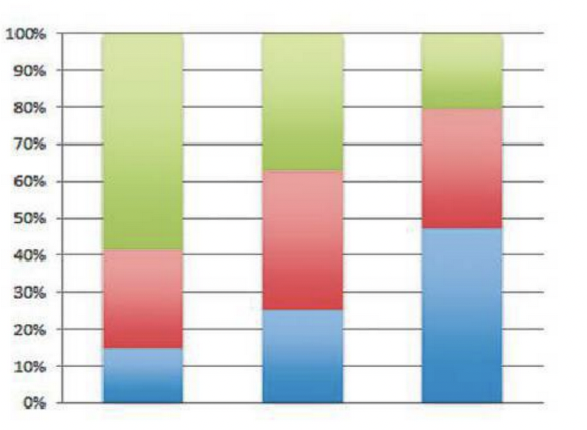
b. What are the degrees of freedom in the chi-squared test of independence for these data?
c. What would a mosaic plot show you that you cannot tell from the stacked bar chart?
a. Does this stacked bar chart suggest that the chi-squared test of independence will be statistically significant? Explain why or why not.
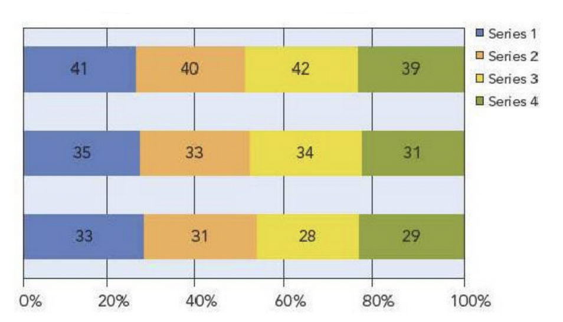
b. What are the degrees of freedom in the chi-squared test of independence for these data?
c. Should seeing a mosaic plot of these data possibly change your answer to “a”?
This is a bar chart of the number of defaults on mortgages in a collection of loans during the credit crisis that began in 2007–2008. The bar chart identifies the type of income documentation used when the mortgage was obtained. Before we test whether loans with full documentation are riskier than the others, what else do we need to know?
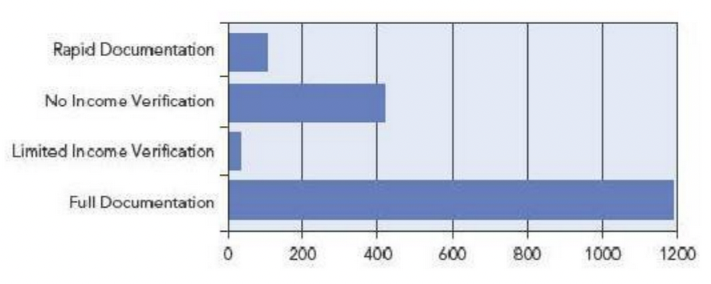
The following bar chart shows the number of major and minor league baseball players that were suspended for using steroids during the 2008 season. Can we use these counts to test whether the rate of steroid use is higher in some positions than others?
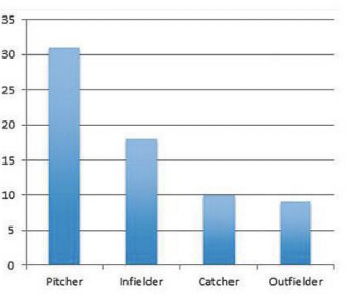
A stock market analyst recorded the number of stocks that went up or went down each day for 5 consecutive days, producing a contingency table with two rows (up or down) and five columns (Monday through Friday). Are these data suitable for applying the chi-squared test of independence ?
A market research firm gathered a random sample of 150 customers. The firm randomly assigned 50 of these to rate the current product and assigned 50 each to rate new versions of the product. The firm then formed a contingency table of Version (old, new A, new B) versus Rating (like, dislike, ambivalent). Are these data suitable for using the chi-squared test of independence?
A bank makes loans to many types of customers. Some of these customers default on their loans. How could analysts at the bank use \(\chi^2\) to identify characteristics associated with customers who default on loans?
Inventory counts are seldom perfect because of misplaced items or misfiled sales reports. How could managers use \(\chi^2\) to decide whether expected inventory counts differ substantially from the actual counts?
Managers in the human resources department suspect that sick-day absentee rates are higher on some weekdays than others. What test can they use to investigate this claim?
A manager in the previous question thinks that the absentee rate is the same on Monday and Friday, but different from the rate on Tuesday through Thursday. What method should she use to test her suspicion?
The following contingency table breaks down a month of customer complaints received by a retailer. Some of those complaining are long-term customers, whereas the rest are recent. There are four types of complaints.
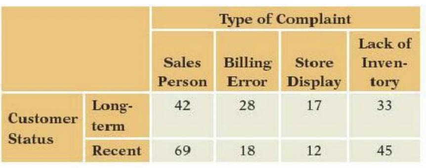
a\. What would it mean to the retailer if customer status and complaint type were dependent?
b\. If many of these complaints come from the same irate customer, do the assumptions needed for a chi-squared test hold?
c\. Does it appear from a brief inspection that customer status and the type of complaint are independent or dependent? Don't calculate $\chi^2$ ; just skim the table.
d\. If every count in the table increased by a factor of 2, how would the value of $\chi^2$ change (for example, if the first cell were to hold 84 rather than 42)? As in (b), think rather than calculate.- A mobile phone service provider randomly samples customers each year to measure current satisfaction with the service provided. The following table summarizes a portion of the survey, with 100 customers sampled each year. Customers are labelled “very satisfied” if they rate their service as 8, 9, or 10 on a 10-point scale. Those who rate the service 5, 6, or 7 are labelled “satisfied.
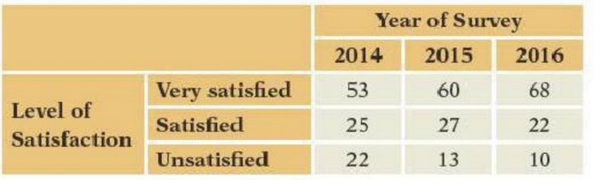 a. The rest are labelled “unsatisfied.”Would the phone provider prefer these counts to be dependent or independent?
b\. The survey includes 100 customers each year, fixing the column totals. Do such fixed margins violate the assumptions of the chi-squared test?
c\. Does it appear that the level of satisfaction and year of the survey are independent or dependent? Don't calculate $\chi^2$; just skim the table.
d\. Suppose that the values shown in the table were column percentages rather than counts, with 250 surveyed each year. How would $\chi^2$ change?You Do It
In each of the next six exercises, answer the question about the small contingency table shown with each exercise.
- These data count the number of male and female shoppers who accept or reject a discounted offer in return for supplying a retailer with an email address. Consider using these data to test the null hypothesis that gender and acceptance are independent (H0). Find the
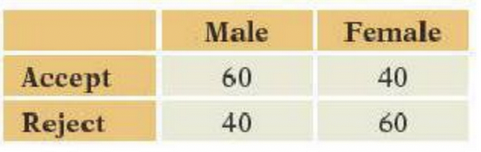
a\. Degrees of freedom of $\chi^2$.
b\. Expected number of women who reject if H~0~ holds
c\. Value of $\chi^2$ for testing H~0~.
d\. p-value for testing H~0~.- These data count the types of meals ordered by customers at two restaurants in a national chain. Consider using these data to test the null hypothesis that store and choice are independent (H0). Find the
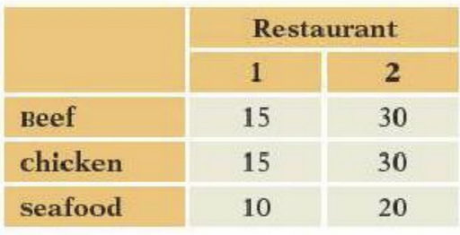
a\. Degrees of freedom of $\chi^2$.
b\. Expected number of customers who order beef at restaurant 1, assuming H~0~ holds
c\. Value of $\chi^2$ for testing H~0~.
d\. p-value for testing H~0~.- The following table shows counts of the number of days that employees were absent from a small manufacturing center. The null hypothesis is that the counts are uniformly distributed over the days of the week. Find the
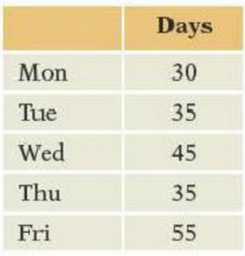
a\. Degrees of freedom of $\chi^2$.
b\. Expected number of days absent on Wednesday, if H~0~ holds
c\. Value of $\chi^2$ for testing H~0~.
d\. p-value for testing H~0~.- The table shown with this question counts the number of calls that arrive at a telephone help desk during the hours of 1 to 3 p.m. on 5 weekdays. The company uses the same number of employees to staff the center for each of these days. Test the null hypothesis that the calls are uniformly distributed over these days, agreeing with the staffing policy. Find the
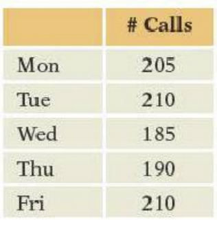 a. Degrees of freedom of \(\chi^2\).
b\. Expected number of calls that arrive on Friday, if H~0~ holds
c\. $\chi^2$
d\. p-value for testing H~0~.The human resources group regularly interviews prospective clerical employees and tests their skill at data entry. The following table shows the number of errors made by 60 prospective clerks when entering a form with 80 numbers. (Five clerks made four errors.) Test the null hypothesis that the number of errors follows a Poisson distribution. Find the
errors Clerks 0 12 1 20 2 9 3 14 4 or more 5 a. Rate (or mean) of the Poisson distribution
b. Expected number of employees who do not make an error
c. Degrees of freedom of \(\chi^2\)
d. \(\chi^2\)
e. p-value for testing H0.
A type of new car is offered for sale with four option packages. A customer can buy any number of these, from none to all four. A manager proposes the null hypothesis that customers pick packages at random, implying the number of packages bought by a customer should be binomial with n = 4. This table shows the number of packages chosen by 400 customers. Find the:
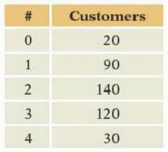
a\. Binomial parameter p needed to compute the expected counts
b\. Estimated probability that a customer picks one option.
c\. Degrees of freedom of $\chi^2$
d\. $\chi^2$
e\. p-value for testing H~0~.Refer to the data shown in Question 33.
a. Compute the value of x2 and the p-value for the test of the null hypothesis of independence. b. Summarize the results of this test for the retailer’s sales manager.
Refer to the data shown in Question 34.
a. Compute the value of x2 and the p-value for the test of the null hypothesis of independence.
b. Summarize the results of this test for the mobile phone service provider.
We routinely use the normal quantile plot to check for normality. One can also use a chi-squared test. For that, we have to group the data into bins, converting numerical data into categorical data. The following figure shows the normal quantile plot of daily stock returns in 2010 on the value-weighted total U.S. market index. The following table counts the number of returns falling into eight intervals. The table includes the count expected under the assumption that these data are normally distributed, using the sample mean x¯=0.0009874 with SD = 0.0151.
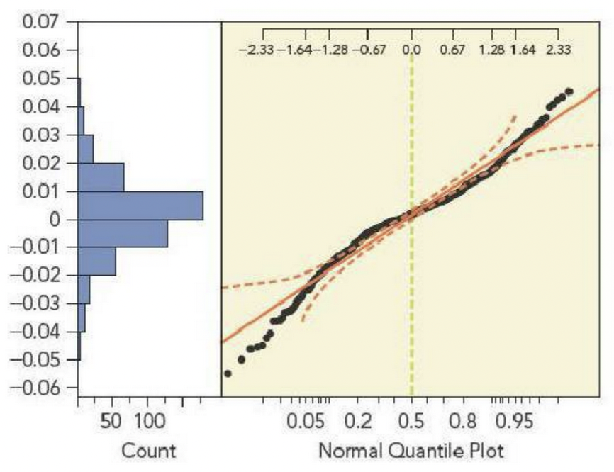 a. What does the normal quantile plot indicate about the distribution of returns?
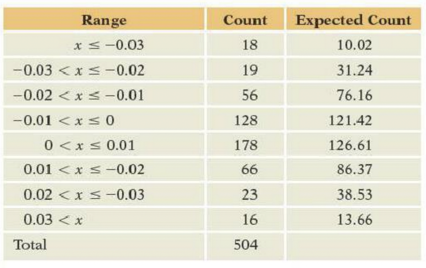
The table groups all returns that are less than − 0.03 and more than 0.03. Why not use more categories to separate very high or low returns? Compute the chi-squared test of goodness of fit and its p-value, noting that we have to estimate two parameters from the data in order to find the expected counts.
Does the chi-squared test agree with the normal quantile plot?
What’s the advantage of using a normal quantile plot to check for normality? The advantage of using the chi-squared test?
- The following table summarizes whether the stock market went up or down during each trading day of 2010.
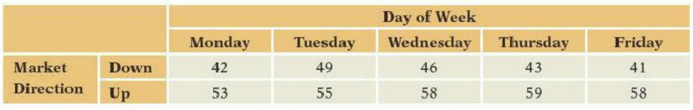
a\. Use a chi-squared test to determine if these data indicate that trading on some days is better or worse (more or less likely to earn positive returns) than any other.
b\. How does the test used in (a) differ from comparing the proportion positive for each day with 0.5?
c\. These data only indicate the direction of the market. How does that limit the conclusions we might draw?- The following table from the U.S. Golfing Association summarizes the performance of players in the 2015 U.S. Open golf tournament. The table shows the number of holes in each round completed in fewer than the allowed number of strokes (birdies, which includes eagles), at the allowed number of strokes (par), with one extra stroke (bogey), or with two extra (double bogey). For example, in the first round players scored par on 1,718 holes. Only players who score among the lower half after two rounds participate in the final two rounds.
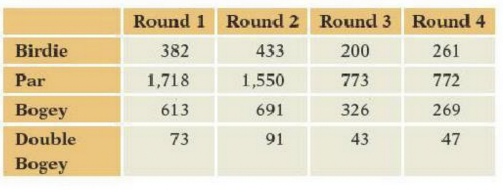
a\. What would it mean to find a statistically significant value of x^2^ for this table? Interpret your answer in the context of the tournament.
b\. What is the impact of dropping the higher scoring players from the later rounds on the assumptions and interpretation of x^2^?
c\. Do these data meet the conditions required by the chi-squared test of independence?
d\. Regardless of your answer to (c) compute x^2^ with a p-value. How would you interpret these values, given your answer to (c)?Section E
Mix and Match
Match the description of each concept with the correct symbol or term.
| Concept | Term/Symbol |
|---|---|
|
\(r^2\) |
|
b0 |
|
ȳ |
|
b1 |
|
X |
|
ŷ |
|
b0 + b1 |
|
Y |
|
y - ŷ |
|
se |
True or False
Mark each statement True or False. If you believe that a statement is false, briefly explain why you think it is false.
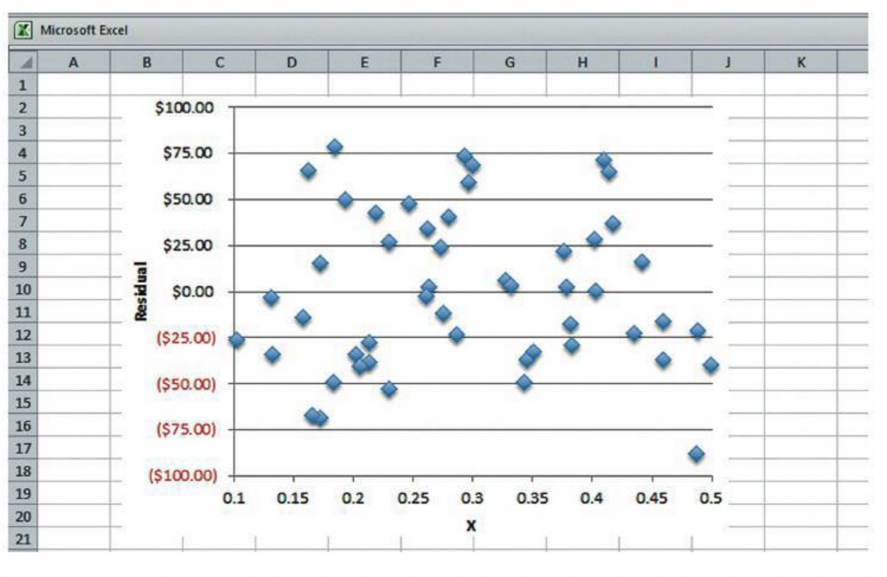
In a scatterplot, the response is shown on the horizontal axis with the explanatory variable on the vertical axis.
Regression analysis requires several values of the response for each value of the predictor so that we can calculate averages for each \(x\).
If all of the data lie along a single line with nonzero slope, then the \(r^2\) of the regression is 1. (Assume the values of the explanatory variable are not identical.)
If the correlation between the explanatory variable and the response is zero, then the slope will also be zero.
The use of a linear equation to describe the association between price and sales implies that we expect equal differences in sales when comparing periods with prices $10 and $11 and periods with prices $20 and $21.
The linear equation (estimated from a sequence of daily observations)
Estimated Shipments = b0 + 0.9 Orders Processed
implies that we expect twice as many shipments when the number of orders processed doubles only if b0 = 0.
The intercept estimates how much the response changes on average with changes in the predictor.
The estimated value \(\hat{y} = b_0 + b_1\) approximates the average value of the response when the explanatory variable equals \(x\).
The horizontal distance between \(y\) and \(\hat{y}\) is known as the residual and so takes its scale from the predictor.
The sum of the fitted value \(\hat{y}\) plus the residual \(e\) is equal to the original data value \(y\).
The plot of the residuals on the predictor should show a linear pattern, with the data packed along a diagonal line.
Regression predictions become less reliable as we extrapolate farther from the observed data.
Think About It
If the correlation between X and Y is r = 0.5, do X and Y share half of their variation in common?
The value of \(r^2 = 1\) if data lie along a simple line. Is it possible to fit a linear regression for which \(r^2\) is exactly equal to zero?
In general, is the linear least squares regression equation of Y on X the same as the equation for regressing X on Y?
In what special case does the regression of Y on X match the regression of X on Y, so that if two fitted lines were drawn on the same plot, the lines would coincide?
From looking at this plot of the residuals from a linear equation, estimate the value of \(s_e\).
This histogram summarizes residuals from a fit that regresses the number of items produced by 50 employees during a shift on the number of years with the company. Estimate \(s_e\) from this plot. 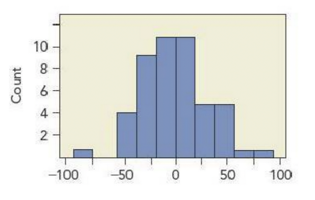
A package delivery service uses a regression equation to estimate the fuel costs of its trucks based on the number of mile driven. The equation is of the form \(\text{Estimated Dollars} = b_0 + b_1\) Miles. If gasoline prices go up, how would you expect the fit of this equation to change?
A customized milling operation uses the equation $200 plus $150 per hours to give price estimates to customers. If it pays a fixed fee to ship these orders, how should it change this equation if the cost of shipping goes up?
If the standard deviation of X matches the standard deviation of Y, then what is the relationship between the slope in a least squares regression of Y on X and the correlation between X and Y?
If the correlation between X and Y is 0.8 and the slope in the regression of Y on X is 1.5, then which of X or Y has larger variation?
Shoppers at a local supermarket spend, on average, $85 during each shopping trip. Imagine the scatterplot that shows the total amount spent each day in the store on the y-axis versus the number of shoppers each day on the x-axis.
(a) Would you expect a linear equation to describe these data?
(b) What would you expect for the intercept of the linear model?
(c) What would you expect for the slope?
(d) Do you expect patterns in the variation around the equation?
Costs for building a new elementary school in the United States average about $100 per square foot. In a review of school construction projects in Arizona, the head of the Department of Education examined a scatterplot of the cost of recently completed schools (Y) versus the size of the school (in square feet, X).
(a) Would you expect a linear equation to describe these data?
(b) What would you expect for the intercept of the linear model?
(c) What would you expect for the slope?
(d) Do you expect patterns in the variation around the equation?
A division of a multinational retail company prepared a presentation to give at the home office in Paris, France. The presentation includes a scatterplot that shows the relationship between square footage and annual sales in retail outlets owned by the chain. The units in the plot show the size in thousands of square feet and the response in thousands of dollars. A fitted line in the plot is \(y = 47 + 650\cdot x\).
(a) Interpret the slope and intercept in the fitted line.
(b) To present the model in Europe, the plot must be shown with sales denominated in euros rather than dollars ( use the exchange rate $1 = €0.82) and size given in square meters rather than square feet ( 1 square foot = 0.093 square meter). Find the slope and intercept in these new units.
(c) Would the \(r^2\) summary attached to the regression model change along with the slope and intercept when the data are changed into euros and meters?
(d) Would \(s_e\) change with the new scales?
An assembly plant tracks the daily productivity of the workers on the line. Each day, for every employee, the plant records the number of hours put in (Hours) and the number of completed packages assembled by the employee (Count). A scatterplot of the data for one day shows a linear trend. A fitted line with the equation
Estimated Count = - 2 + 15 Hours
summarizes this trend
(a) Interpret the slope and intercept in the fitted line.
(b) A carton holds 12 packages. A working day at this plant has 8 hours. Describe the regression line if the data were converted to cartons produced (Y) and days (or fraction of a day) worked.
(c) Would the \(r^2\) summary attached to the regression model change along with the slope and intercept when the data are converted to·cartons and days?
(d) What about the value of \(s_e\)? Would it change with the new scales?
You Do It
The name shown with each question identifies the data table to be used for the problem.
Diamond Rings This data table contains the listed prices and weights of the diamonds in 48 rings offered for sale in The Singapore Times. The prices are in Singapore dollars, with the weights in carats.
(a) Scatterplot the listed prices of the rings on the weights of the rings. Does the trend in the average price seem linear?
(b)Estimate the linear equation using least squares. Interpret the fitted intercept and slope. Be sure to include their units. Note if either estimate represents a large extrapolation and is consequently not reliable.
(c) Interpret the summary values \(r^2\) and \(s_e\) associated with the fitted equation. Attach units to these summary statistics as appropriate.
(d) What is the estimated difference in price (on average) between diamond rings with diamonds that weigh 0.25 and 0.35 carat?
(e) The slope in this regression is a lot larger than the slope for the emerald diamonds discussed in this chapter. Or is it? Notice that one Singapore dollar is currently worth about $0.65 and convert the slope to an analysis in U.S. dollars.
(f) These are rings, not diamonds. How would you expect the cost of the setting to affect the linear equation between weight and price?
(g) A ring with a 0.18-carat diamond lists for $;325 Singapore. Is this a bargain?
(h) Plot the residuals from this regression. If appropriate, summarize these by giving the mean and standard deviation of the collection of residuals. What does the standard deviation of the residuals tell you about the fit of this equation?
Convenience Shopping It’s rare that you’ll find a gas station these days that only sells gas. It’s become more common to find a convenience store that also sells gas. These data describe the sales over time at a franchise outlet of a major U.S. oil company. Each row summarizes sales for one day. This particular station sells gas, and it also has a convenience store and a car wash. The column labeled Sales gives the dollar sales of the convenience store, and the column Volume gives the number of gallons of gas sold
(a) Scatterplot Sales on Volume. Does there appear to be a linear pattern that relates these two sequences?
(b) Estimate the linear equation using least squares. Interpret the fitted intercept and slope. Be sure to include their units. Note if either estimate represents a large extrapolation and is consequently not reliable.
(c) Interpret the summary values \(r^2\) and \(s_e\) associated with the fitted equation. Attach units to these summary statistics as appropriate.
(d) Estimate the difference ’in sales at the convenience store (on average) between a day with 3,500 gallons sold and a day with 4,000 gallons sold.
(e) This company also operates franchises in Canada. At those operations, gas sales are tracked in liters and sales in Canadian dollars. What would your equation look like if measured in these other units? (Note: 1 gallon = 3.7854 liters, and use the exchange rate $1 = $1.1 Canadian.) Include \(r^2\) and \(s_e\) as well as the slope and intercept.
(f) The form of the equation suggests that selling more gas produces increases in sales at the associated store. Does this mean that customers come to the station to buy gas and then happen to buy something at the convenience store, or might the causation work in the other direction?
(g) On one day, the station sold 4,165 gallons of gas and had sales of $1,744 at the attached convenience store. Find the residual for this case. Are these sales higher or lower than you would expect?
(h) Plot the residuals from this regression. If appropriate, summarize these by giving the mean and SD of the collection of residuals. What does the SD of the residuals tell you about the fit of this equation?
Download Before taking the plunge into videoconferencing, a company ran tests of its current internal computer network. The goal of the tests was to measure how rapidly data moved through the network given the current demand on the network. Eighty files ranging in size from 20 to 100 megabytes (MB) were transmitted over the network at various times of day, and the time to send the files (in seconds) recorded.
(a) Create a scatterplot of Transfer Time on File Size. Does a line seem to you to be a good summary of the association between these variables?
(b) Estimate the least squares linear equation for Transfer Time on File Size. Interpret the fitted intercept and slope. Be sure to include their units. Note if either estimate represents a large extrapolation and is consequently not reliable.
(c) Interpret the summary values \(r^2\) and \(s_e\) associated with the fitted equation. Attach units to these summary statistics as appropriate.
(d) To make the system look more impressive (i.e., have smaller slope and intercept), a colleague changed the units of Y to minutes and the units of X to kilobytes ( 1 MB = 1,024 kilobytes). What does the new equation look like? Does it fit the data any better than the equation obtained in part (b)?
(e) Plot the residuals from the regression fit in part (b) on the sizes of the files. Does this plot suggest that the residuals reveal patterns in the residual variation? ·
(f) Given a goal of getting data transferred in no more than 15 seconds, how many data do you think can typically be transmitted in this length of time? Would the equation provided in part (b) be useful, or can you offer a better approach?
Production Costs A manufacturer produces custom metal blanks that are used by its customers for computer-aided machining. The customer sends a design via computer (a 3-D blueprint), and the manufacturer comes up with an estimated cost per unit, which is then used to determine a price for the customer. This analysis considers the factors that affect the cost to manufacture these blanks. The data for the analysis were sampled from the accounting records of 195 previous orders that were filled during the last 3 months.
(a) Create a scatterplot for the average cost per item on the material cost per item. Do you find a linear pattern?
(b) Estimate the linear equation using least squares. Interpret the fitted intercept and slope. Be sure to include their units. Note if either estimate represents a large extrapolation and is consequently not reliable.
(c) Interpret the summary values \(r^2\) and \(s_e\) associated with the fitted equation. Attach units to these summary statistics as appropriate.
(d) What is the estimated increase in the average cost per finished item if the material cost per unit goes up by $3?
(e) One can argue that the slope in this regression should be 1, but it’s not. Explain the difference.
(f) The average cost of an order in these data was $61.16 per unit with material costs of $4.18 per unit. Is this a relatively expensive order given the material costs?
(g) Plot the residuals from this regression. If appropriate, summarize these by giving the mean and standard deviation of the collection of residuals. What does the standard deviation of the residuals tell about the fit of this equation?
Seattle Homes This data table contains the listed prices and the number of square feet for 112 homes listed by an on-line realtor in the Seattle area.
(a) Create a scatterplot for the price of the home on the number of square feet. Does the trend in the average price seem linear?
(b) Estimate the linear equation using least squares. Interpret the fitted intercept and slope. Be sure to include their units. Note if either estimate represents a large extrapolation and is consequently not reliable.
(c) Interpret the summary values \(r^2\) and \(s_e\) associated with the fitted equation. Attach units to these summary statistics as appropriate.
(d) If a homeowner adds an extra room with 500 square feet to her home, can we use this model to estimate the increase in the value of the home?
(e) A home with 910 square feet lists for $635,000. What is the residual for this case? Is it a good deal?
(f) Do the residuals from this regression show patterns? Does it make sense-to interprets, as the standard deviation of the errors of the fit? Use the plot of the residuals on the number of square feet to help decide.
Leases This data table includes the annual prices of 223 commercial leases. All of these leases provide office space in a Midwestern city in the United States.
(a) Create a scatterplot for the annual cost of the leases on the number of square feet of leased space. Does the pattern in the plot seem linear? Does the White Space Rule hint of possible problems?8
(b) Estimate the linear equation using least squares. Interpret the fitted intercept and slope. Be sure to include theirunits. Note if either estimate represents a large extrapolation and is consequently not reliable.
(c) Interpret the summary values \(r^2\) and \(s_e\) associated with the fitted equation. Attach units to these summary statistics as appropriate.
(d) If a business decides to expand and wants to lease an additional 1,000 square feet beyond its current lease, explain how it can use the equation obtained in part (b) to estimate the increment in the cost of its lease. Would this estimate be reliable?
(e) A row in the data table describes a lease for 32,303 square feet. The annual cost for this lease is $496,409. What is the residual for this case? Is it a good deal?
(f) Do the residuals from this regression show any patterns? Does it make sense to interpret \(s_e\), as the standard deviation of the errors of the fit? Use the plot of the residuals on the number of square feet to decide.
8The White Space Rule was covered in Chapter 4. A plot that is mostly white space doesn’t reveal much about the data. A good plot uses its space to show data, not empty space.
R&D Expenses This data file describes 409 companies operating in the semiconductor industry in 2014. One column gives the expenses on research and development (R&D), and another gives the total assets of the companies. Both columns are reported in millions of dollars.
(a) Scatterplot R&D Expense on Assets. Does a line seem to you to be a good summary of the relationship between these two variables? Describe the outlying companies.
(b) Estimate the least squares linear equation for R&D Expense on Assets. Interpret the fitted intercept and slope. Be sure to include their units. Is either estimate a large extrapolation and consequently not reliable?
(c) Interpret the summary values \(r^2\) and \(s_e\), associated with the fitted equation. Attach units to these summary statistics as appropriate. Does the value of \(r^2\) seem fair to you as a characterization of how well the equation summarizes the association?
(d) Inspect the histograms of the \(x\) and y-variables in this regression. Do the shapes of these histograms anticipate some aspects of the scatterplot and the linear relationship between these variables?
(e) Plot the residuals from this regression. Does this plot reveal patterns in the residuals? Does \(s_e\) provide an adequate summary of the residual variation?
Cars The cases that make up this data set are types of cars. The data include the engine size (in liters) and horsepower (HP) of 311 vehicles sold in the United States in 2016. These measurements were produced by the U.S. Environmental Protection Agency as part of its mandate to monitor vehicle fuel efficiency.
(a) Create a scatterplot of the horsepower on the engine displacement of the car. Describe the association between these variables.
(b) Estimate the linear equation using least squares. Interpret the fitted intercept and slope. Be sure to include their units. Note if either estimate represents a large extrapolation and is consequently not reliable.
(c) Interpret \(r^2\) and \(s_e\), associated with the fitted equation. Attach units to these summary statistics as appropriate.
(d) If a manufacturer increases the size of the engine by 0.5 liter, should it use 0.5b1 to get a sense of how much more power the engine will generate?
(e) A vehicle with a 3-liter engine among these produces 340 horsepower. What is the residual for this case? Does the.data point representing this car lie above or below the fitted line?
(f) How would you describe cars with positive residuals? Those with negative residuals?
(g) Do you find patterns in the residuals from this regression? Does it make sense to interpret \(s_e\) as the standard deviation of the errors of the fit? Use the plot of the residuals on the predictor to help decide.
OECD The Organization for Economic Cooperation and Development (OECD) tracks various summary statistics of the member economies. Two variables of interest are GDP (gross domestic product per capita, a measure of the overall production in an economy per citizen) and trade balances (measured as a percentage of GDP). Exporting countries tend to have large positive trade balances. Importers have negative balances. These data were extracted from online databases provided by the OECD in 2016.
(a) Describe the association in the scatterplot of GDP on Trade Balance.
(b) Estimate the least squares linear equation for GDP on Trade Balance. Interpret the fitted intercept and slope. Be sure to include their units. Note if either estimate represents a large extrapolation and is consequently not reliable.
(c) Interpret \(r^2\) and \(s_e\), associated with the fitted equation. Attach units to these summary statistics as appropriate.
(d) Plot the residuals from this regression. After considering this plot, does \(s_e\) provide an adequate summary of the residual variation?
(e) Which country has the largest values of each variable? Is it the country that you expected?
(f) Locate the United States in the scatterplot and find the residual for the United States. Interpret the value of the residual for the United States.
Hiring A firm that operates a large, direct-to-consumer sales force would like to implement a system to monitor the progress of new agents. A key task for agents is to open new accounts; an account is a new customer to the business. The goal is to identify “superstar agents” as rapidly as possible, offer them incentives, and keep them with the company. To build such a system, the firm has been monitoring sales of new agents over the past 2 years. The response of interest is the profit to the firm (in dollars) of contracts sold by agents over their first year. Among the possible predictors of this performance is the number of new accounts developed by the agent during the first 3 months of work.
(a) Create a scatterplot for Profit from Sales on Number of Accounts. Does a line seem to be a good summary of the association between these variables?
(b) Estimate the least squares linear equation for Profit from Sales on Number of Accounts. Interpret the fitted intercept and slope; be sure to include their units. Note if either estimate represents a large extrapolation and is consequently not reliable.
(c) Interpret \(r^2\) and \(s_e\), associated with the fitted equation. Attach units to these summary statistics as appropriate.
(d) Based on the equation fit in part (b), what is the gain in profit to the firm of getting agents to open 100 additional accounts in the first 3 months? Do you think that this is a reasonable estimate?
(e) Plot the residuals from the regression fit in part (b) on the number of accounts. Does this plot show random variation?
(f) Exclude the data for agents who open 75 or fewer accounts in the first 3 months. Does the fit of the least squares line change much? Should it?
Promotion These data describe spending by a major pharmaceutical company for promoting a cholesterol lowering drug. The data cover 39 consecutive weeks and isolate the area around Boston. The variables in this collection are shares. Marketing research often uses the notion of voice to describe the level of promotion for a product. In place of the absolute spending for advertising, voice is the share of a type of advertising devoted to a specific product. Voice puts this spending in context; $10 million might seem like a lot for advertising unless everyone else is spending $200 million.
The column Market Share is sales of this product divided by total sales for such drugs in th Boston area. The column Detail Voice is the ratio of detailing for this drug to the amount of detailing for all cholesterol-lowering drugs in Boston. Detailing counts the number of promotional visits made by representatives of a pharmaceutical company to doctors’ offices.
(a) Do timeplots of Market Share and Detail Voice suggest an association between these series? Does either series show simple variation?
(b) Create a scatterplot for Market Share on Detail Voice. Are the variables associated? Does a line summarize any association?
(c) Estimate the least squares linear equation for the regression of Market Share on Detail Voice. Interpret the intercept and slope. Be sure to include the units for each. Note if either estimate represents a large extrapolation and is consequently not reliable.
(d) Interpret \(r^2\) and \(s_e\), associated with the fitted equation. Attach units to these summary statistics as appropriate.
(e) According to this equation, how does the average share for this product change if the detail voice rises from 0.04 to 0.14 ( 4% to 14%)?
(f) Plot the residuals from the regression fit in part (c) on the level of detail voice. Does this plot suggest that the residuals possess simple variation?
Apple This data set tracks the monthly performance of stock in Apple Computer since January 1990 through the end of 2015. The data include 312 monthly returns on Apple Computer, as well as returns on the entire stock market, returns on Treasury Bills (short term, 30-day loans to Uncle Sam), and inflation.
(The column Market Return is the return on a value weighted portfolio that purchases stock in proportion to the size of the company rather than one from each company.)
(a) Begin by inspecting timeplots of the variables Apple Return and Market Return. Do the timeplots show trends that would be obscured in the scatterplot of Apple Return and Market Return?
(b) Create a scatterplot for Apple Return on Market Return. Does a line seem to be a good summary of the association between these variables?
(c) Estimate the least squares linear equation for Apple Return on Market Return. Interpret the fitted intercept and slope. Be sure to include their units. Note if either estimate represents a large extrapolation and is consequently not reliable.
(d) Interpret \(r^2\) and \(s_e\), associated with the fitted equation. Attach units to these summary statistics as appropriate.
(e) If months in which the market went down by 2% were compared to months in which the market went up by 2%, how would this equation suggest Apple stock would differ between these periods?
(f) Plot the residuals from the regression fit in part (b) on Market Return. Does this plot suggest that the residuals possess simple variation? Do you recognize the dates of any of the outliers?
(g) Careful analyses of stock prices often subtract the so-called risk-free rate from the returns on the stock. After the risk-free rate has been subtracted, the returns are sometimes called “excess returns” to distinguish them. The risk-free rate is the interest rate returned by a very safe investment, one with no (or at least almost no) chance of default. The return on short-term Treasury Bills is typically used as the risk-free rate. Subtract the risk-free rate from returns on Apple stock and the market, and then refit the equation using these excess returns. Does the equation change from the previous estimate? Explain why it’s similar or different.